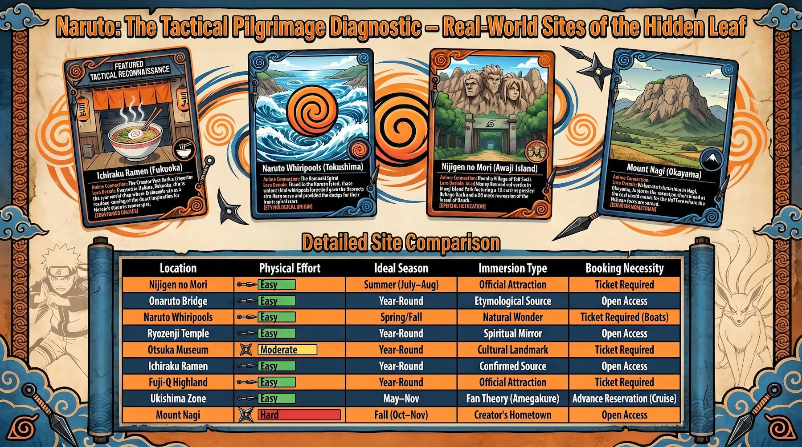
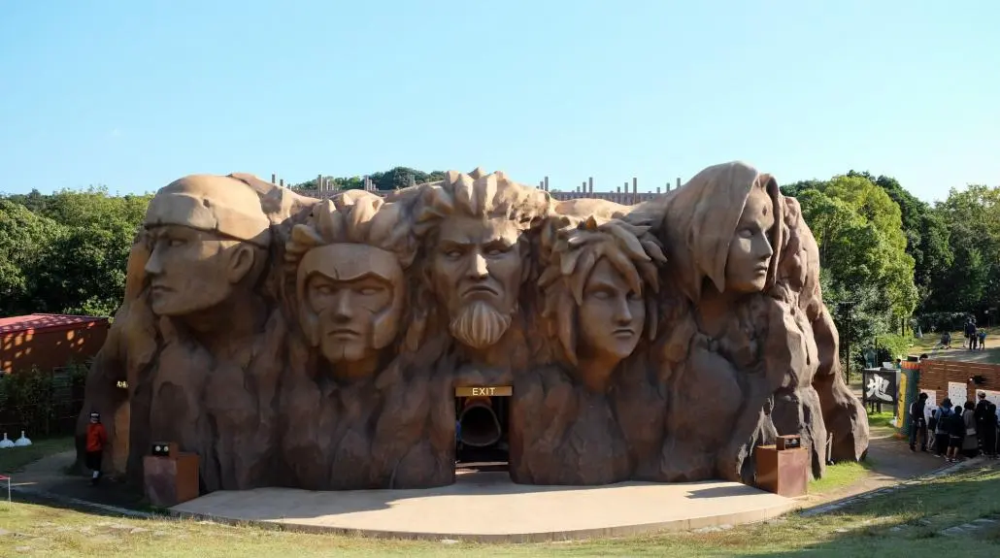
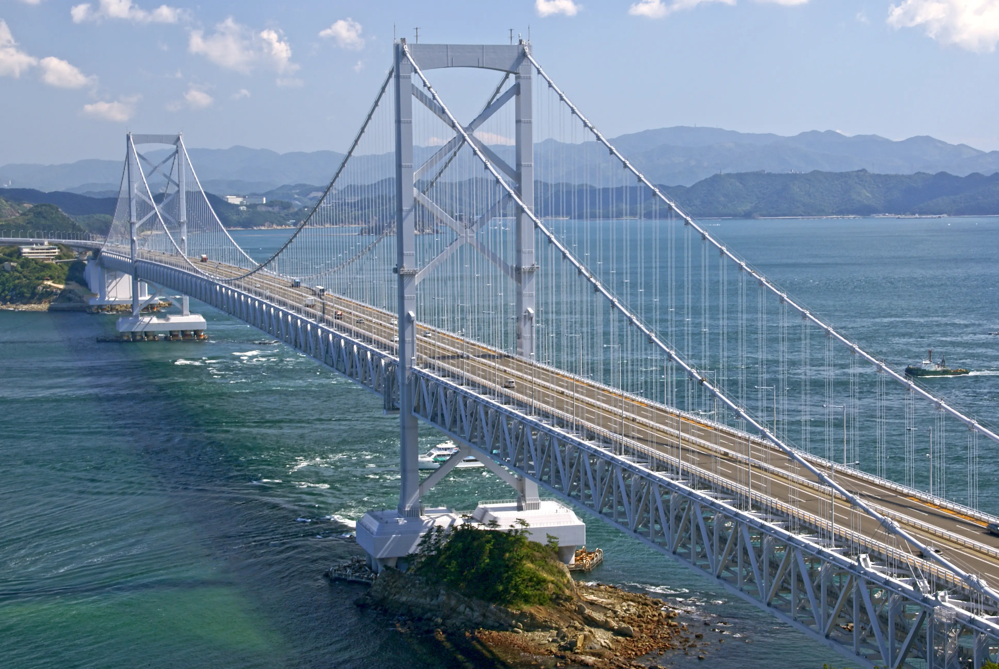
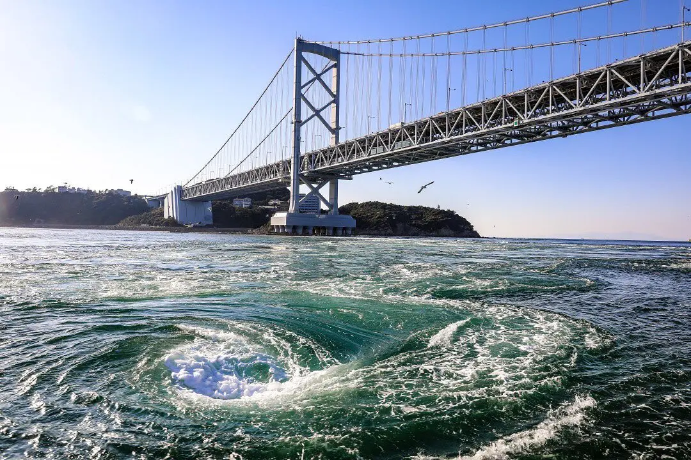
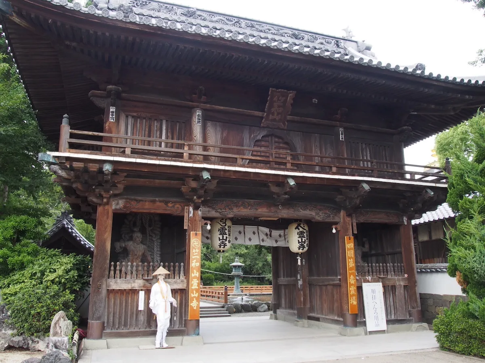
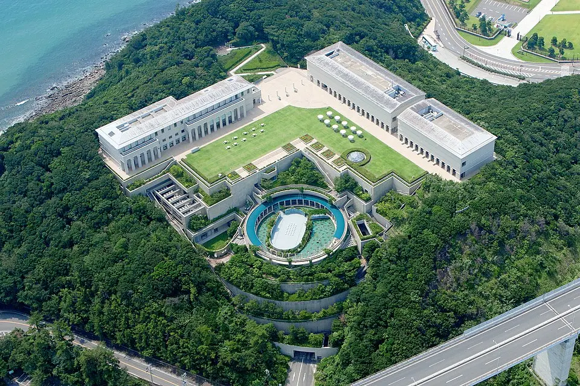
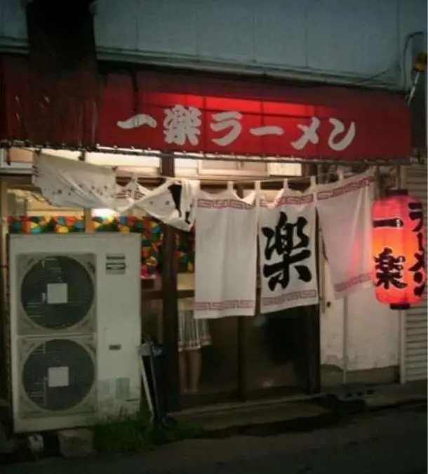
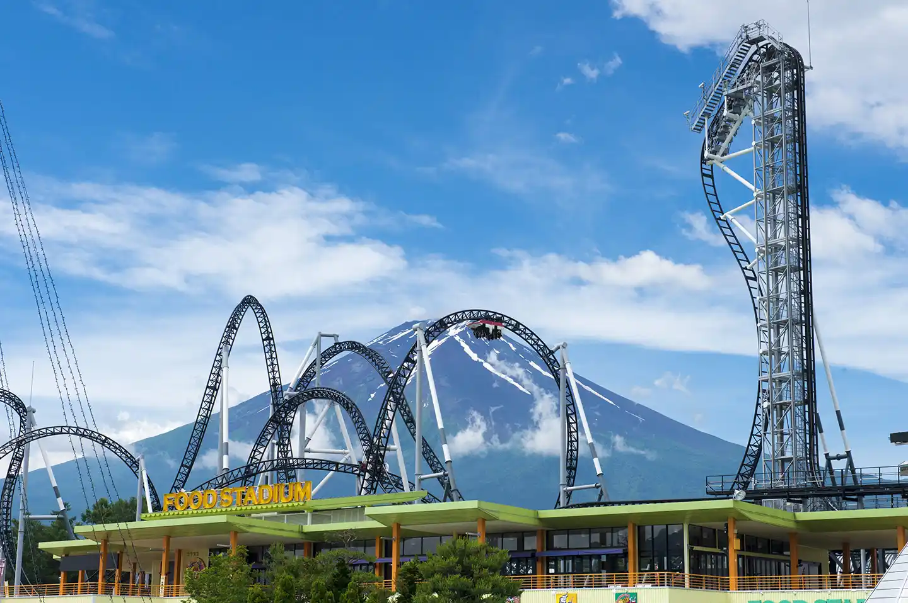
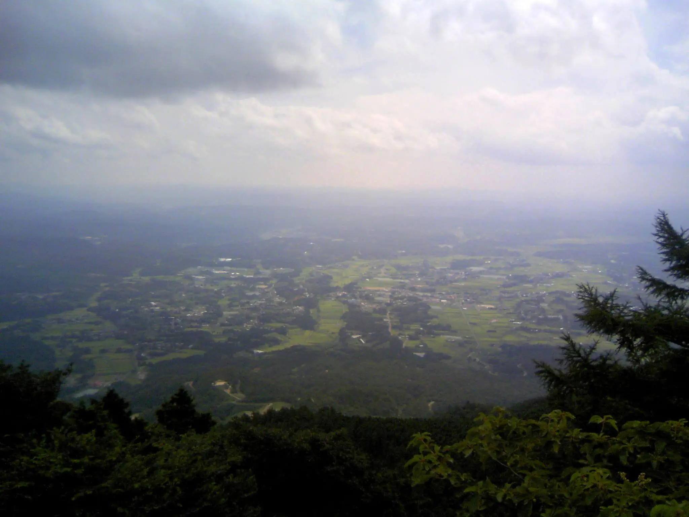

Masashi Kishimoto did not invent a world. He documented one. The forests behind Konoha's gates grew from the slopes of Mount Nagi in Okayama Prefecture, where Kishimoto spent his childhood. The ramen counter where Naruto sat with Iruka — spooning through bowl after bowl of miso chashu — was a real shop near Kyushu Sangyo University in Fukuoka, where a young art student spent too much money on food that tasted like belonging. The whirlpools of the Naruto Strait lent the Uzumaki clan their name and their spiral crest. The industrial canal network of Kawasaki, photographed at night when the refinery flare stacks turn the sky amber, became the skyline of Amegakure, the Village Hidden in Rain.
This is the complete Naruto pilgrimage guide — nine documented locations across Japan, each connected to the anime through official confirmation, production research, or carefully documented fan analysis, along with the hotels, ryokan, and manga cafés where you can sleep inside the story. The sites span Hyogo and Tokushima in western Japan, Fukuoka on Kyushu, Yamanashi at the foot of Mount Fuji, Kanagawa on the industrial edge of Tokyo, and Okayama in the heart of Chugoku.
No single trip covers all nine. The Awaji Island and Naruto region alone contains five locations within fifty minutes of each other — the natural starting point for any pilgrimage. Begin there. Cross the Onaruto Bridge at the moment the tide turns, when the whirlpools reach their full twenty meters across. Then work outward.

The complete Naruto pilgrimage diagnostic — effort level, ideal season, and booking requirements for all 9 sacred sites across Japan
The Pilgrimage Map — 9 Sacred Sites
- Nijigen no Mori, Awaji Island — Konoha village and Hokage Rock at full physical scale
- Onaruto Bridge, Tokushima — The great bridge whose city names the series' protagonist
- Naruto Whirlpools, Tokushima — The Uzumaki spiral written in tidal water
- Ryozenji Temple, Naruto — First temple of the Shikoku pilgrimage, start of every long road
- Otsuka Museum of Art, Naruto — Every masterpiece the world ever made, in one building
- Ichiraku Ramen, Fukuoka — The real counter where Kishimoto became a regular
- Fuji-Q Highland, Yamanashi — The Valley of the End, rendered in four dimensions
- Ukishima Industrial Zone, Kawasaki — The fan theory behind Amegakure's skyline
- Nagi & Mount Nagi, Okayama — The creator's hometown, the real Konoha
AoAwo Naruto Resort — Hub for the Awaji-Naruto Cluster
Ōge-16-45 Narutochō Tosadomariura, Naruto, Tokushima · 4-star resort · 208 rooms · Anime Pilgrimage
Nijigen no Mori: Where Konoha Stands at Full Scale

Nijigen no Mori — literally "two-dimensional forest" — occupies a forested hillside in the Hyogo Prefectural Awaji Island Park, a short drive from the northern tip of the Akashi Kaikyo Bridge, the world's longest suspension span. The park opened in 2017 and its Naruto section, NARUTO & BORUTO SHINOBI-ZATO, is the largest dedicated Naruto attraction in existence. It is not a themed gift shop or a cartoon-painted building — it is a recreation of Konohagakure spanning the actual terrain of the hill, using the living trees as the walls of the Hidden Leaf Village.
This is a Confirmed connection, built under direct franchise license. The physical Hokage Rock stands at the entrance — roughly twelve meters of carved cliff face bearing the likenesses of the five Hokage. After dark, projection mapping transforms it into a battlefield: Naruto fights Pain on the stone surface while the forest pulses with ninjutsu light effects. The three-dimensional maze inside the village recreates the Forest of Death from the Chunin Exams, built into the hillside's actual trees. The Ichiraku Ramen branch serves real ramen. You can order Naruto's standing order at the counter where it was always meant to be ordered.
Arrive at opening — 10:00 AM on most days — to secure mission activity slots before they fill. The park runs until 10:00 PM; the evening projection mapping shows begin at nightfall and are included with park entry. If arriving from the mainland by ferry, the free shuttle bus from Iwaya Port connects directly to the park entrance.
Where to Stay — Awaji Island
Hub: AoAwo Naruto Resort — 45-minute drive south. The pilgrimage base for Locations 01–05. See hub card above.
Local: Grand Chariot Hokutoshichisei 135° — The only hotel inside Nijigen no Mori itself. Character Themed rooms include the Hokage's Villa and the Akatsuki Cocoon. From ¥50,518 per person. The most direct accommodation for this location.
Local: Yamaichiya — Family pension in Iwaya, 5 minutes from the park; former fishermen owners, exceptional fresh seafood. Budget option. Anime Pilgrimage.
Onaruto Bridge: The Great Bridge of the Naruto Strait

The Onaruto Bridge spans 1,629 meters across the Naruto Strait between Awaji Island and the northeastern corner of Shikoku. Construction began in 1976; the bridge opened in 1985, two years after Kishimoto was born sixty kilometers east. The strait below it is one of the most hydrodynamically extreme waterways in Japan: tidal flows between the Pacific Ocean and the Seto Inland Sea funnel through a channel only 1.3 kilometers wide, creating currents that reach fifteen kilometers per hour and generating whirlpools up to twenty meters across during spring tides.
The bridge's connection to the franchise is confirmed at the most foundational level — the city of Naruto, at the Shikoku end of this bridge, lends its name to the series' protagonist. The visual connection runs deeper: the strait's whirlpools, the uzushio, are the direct etymological source of the Uzumaki clan name. Uzu means whirlpool. Shio means tide. The spiral crest worn by Naruto on his jumpsuit and by Minato on his coat replicates the top-down aerial view of an uzushio exactly. The whirlpool is not a metaphor. It is the source.
Walk the bridge from the Tokushima side. The Uzu-no-Michi walkway extends 450 meters inside the bridge's lower deck, 45 meters above the sea, with glass panels in the floor. On a day of strong tides, the water below moves with visible force — currents colliding, foam lines spiraling, whirlpools forming and dissolving in under a minute.
Where to Stay — Southern Awaji / Naruto Area
Hub: AoAwo Naruto Resort — 5-minute drive from the Tokushima end of the bridge. Pilgrimage base for Locations 01–05.
Local: Wakashio — Traditional ryokan on Awaji's southern tip with direct views of the Naruto Strait and the bridge from guest rooms. Rated 4.8 on Rakuten Travel. Anime Pilgrimage.
Local: Oshio-so — Closest accommodation to the Onaruto Bridge at 2.2 km; small ryokan, same strait views at a more accessible price. Anime Pilgrimage.
The Naruto Whirlpools: The Uzumaki Spiral Made Water

Standing on the glass-floored deck of Uzu-no-Michi, 45 meters above the Naruto Strait, you look down into one of the world's three most powerful tidal currents — the other two being the Strait of Messina and Seymour Narrows in British Columbia. The largest whirlpools form here during spring tides reach twenty meters in diameter. They appear without warning, expand rapidly for thirty to sixty seconds, then dissolve back into the churning current. They are genuinely alarming from above — not scenic, but violent in the way that large natural forces always are when you are close enough to understand their scale.
These are the uzushio that gave the Uzumaki clan their name. The Land of Whirlpools, Uzushio no Kuni, was the ancestral homeland of the Uzumaki — a nation destroyed in war, its survivors scattered across the shinobi world. The spiral crest worn by Naruto on his jumpsuit and by Minato on his coat replicates the aerial view of an uzushio exactly. For the most intense encounter, the sightseeing boat operated by Uzushio Kisen takes you into the strait at water level. The crossing lasts twenty minutes; the largest whirlpools pass within ten meters of the hull.
Where to Stay — Naruto Park Area
Hub: AoAwo Naruto Resort — 5-minute drive from the whirlpool viewing area. Pilgrimage base for Locations 01–05.
Local: Wakashio — Ryokan on the Awaji side of the strait; the whirlpools are visible from guest rooms during peak tides. Rated 4.8 on Rakuten Travel. Anime Pilgrimage.
Ryozenji Temple: The Beginning of Every Long Road

Ryozenji is the first temple of the Shikoku Henro — the 1,200-kilometer pilgrimage that circles Shikoku visiting 88 temples associated with the Buddhist monk Kobo Daishi, who lived from 774 to 835 AD. The pilgrimage takes roughly two months on foot. Most henro begin here, at this eighth-century temple in the Bando district of Naruto City, dressed in white robes with a wooden walking staff and a sedge hat inscribed with the words dōgyō ninin — "two traveling together," meaning that Kobo Daishi walks alongside every pilgrim. The lantern-lit main hall smells of incense and damp stone. The courtyard holds a quality of deliberate quiet that places absorb when people have been paying attention in them for many centuries.
The connection to Naruto is Widely Cited rather than officially confirmed. The concept of the solitary journey — the road taken alone, the burden carried alone, the transformation that only hardship produces — runs through the Naruto narrative from the first chapter to the last. The henro is Japan's oldest and most recognizable version of that arc. Naruto's progress from outcast to Hokage mirrors the pilgrim's 1,200-kilometer walk from brokenness to clarity. Dōgyō ninin — two traveling together — is also the core of every bond Naruto forms: with Sasuke, with Jiraiya, with Iruka. Whether or not Kishimoto drew from the henro consciously, pilgrims and Naruto fans have recognized each other at this temple gate for years.
Visit before 8:30 AM to find the courtyard to yourself. The temple is two minutes' walk from Bando Station on the JR Kotoku Line. Entry is free. The stamp office sells full henro equipment: white robe, hat, staff, and the nokyo-cho stamp book that records progress through all 88 temples.
Where to Stay — Bando / Naruto City
Hub: AoAwo Naruto Resort — 20-minute drive from Ryozenji Temple. Pilgrimage base for Locations 01–05.
Local: Otoriien (料理旅館 大鳥居苑) — Family-run ryokan immediately beside the temple gate; kaiseki meals use Naruto Strait seafood and seasonal Tokushima vegetables. Rated 4.4 on Google. Anime Pilgrimage.
Local: Business Hotel Pocket — Budget option between Tokushima city and Naruto; recently renovated, manga shelf confirmed in the lobby from guest photos. Practical base for the Ryozenji-Otsuka Museum cluster. Manga Sleepover.
Otsuka Museum of Art: Every Masterpiece the World Ever Made

The Otsuka Museum of Art opened in 1998 in Naruto Park, three minutes' walk from the AoAwo Naruto Resort. It is the largest museum in Japan by total floor space — 29,412 square meters across five underground and overground floors — and it contains over 1,000 ceramic reproductions of Western masterpieces, each fired onto ceramic plates at original scale and guaranteed to last 2,000 years. The Sistine Chapel ceiling occupies an entire room. Monet's water lily series fills a dedicated hall. Van Gogh's Sunflowers hangs at the exact height and scale where it hangs in London. Photography is unrestricted throughout. You can touch the surface of the Last Supper.
The connection to Naruto is Visual Similarity in category but culturally significant in practice. The museum's founding premise — great art democratized, made available to anyone regardless of geography or wealth, preserved against the decay of time — resonates directly with Naruto's recurring theme of knowledge hoarded by the few and sought by those with nothing. More concretely, the Otsuka Pharmaceutical Group that funds this museum is headquartered in Naruto City. Its name appears on street signs, bus stops, and highway exits throughout the city that gave the series its protagonist. It is the greatest cultural institution Naruto City has produced, and it bears the same name.
Allow at least four hours. The full chronological route is approximately four kilometers. The basement restaurant serves lunch from a menu built around seasonal Tokushima ingredients. The rooftop garden overlooks the Seto Inland Sea.
Where to Stay — Naruto Park
Hub: AoAwo Naruto Resort — 3-minute walk from the museum entrance. Pilgrimage base for Locations 01–05.
Local: Hotel Villa Bel Tramonto — Van Gogh's Sunflower Room — 3-minute walk from the museum; the dedicated Van Gogh's Sunflower Room is themed around the same sunflower paintings displayed inside the Otsuka — matching aromas, palette, and herbal teas. Adults only, private open-air jacuzzi. Anime Pilgrimage.
Ichiraku Ramen, Fukuoka: The Counter That Built a Character

Fukuoka is the home of tonkotsu ramen — pork-bone broth cooked until it turns opaque and pale, served with thin straight noodles and a slice of chashu pork. The city's ramen culture is embedded in its geography: small counters in every district, yatai food stalls along the Nakagawa River in the evenings, the smell of rendered bone fat in the air around Hakata Station after dark. Masashi Kishimoto arrived here to study at Kyushu Sangyo University and spent his student years at one counter near the campus — a family-run shop called Ichiraku Ramen.
The connection is Confirmed. In a 2014 interview, Kishimoto acknowledged that the fictional Ramen Ichiraku in Konoha — where Naruto celebrates every victory, where Iruka takes him when the world is unkind, where Hinata meets him for their first date — was directly based on this real shop. He became friends with the owner and staff during his years as a regular, in exactly the way Naruto befriended Teuchi and Ayame. The original location near Kyushu Sangyo University closed in 2014. The Najima main store and the Shime branch remain open.
Visit the Najima main store. It occupies a long counter in an unassuming shopfront, staffed by people who have been making the same broth for over fifty years. Order the miso chashu pork ramen — Naruto's standing order. The broth runs lighter than standard Fukuoka tonkotsu: smoother, with more complexity, the product of a recipe refined over decades. This is where the character was built, one bowl at a time.
Where to Stay — Fukuoka City
Local: Quintessa Hotel Fukuoka Tenjin Comic & Books — Central Tenjin, 2 min from subway; lobby manga library with nearly 7,000 volumes, accessible 24 hours. From ¥9,000/night. Manga Sleepover.
Local: Teriha Spa Resort — Japan's largest spa complex: 17 bath types, sauna, 30,000-volume manga corner, and the Kodokudo — a low-temperature sauna designed as a private manga reading alcove. Capsule, cabin, and hotel room accommodation. Manga Kissa.
Local: Daimaru Besso — 160-year-old ryokan in Chikushino, 20 minutes from Fukuoka; natural onsen, tatami rooms with private wooden baths. Described by a 2025 guest as "straight out of a Ghibli film." Anime Pilgrimage.
Fuji-Q Highland: The Valley of the End, in Four Dimensions

Fuji-Q Highland sits at the base of Mount Fuji in Yamanashi Prefecture — the mountain fills the northern sky at 3,776 meters on clear days, its cone perfectly visible above the park's roller coasters. Since 2018, the park has housed NARUTO × BORUTO Fuji Hidden Leaf Village: a dedicated Naruto theme area that builds Konoha at altitude with the mountain behind it. Where Nijigen no Mori on Awaji builds Konoha in a living forest, Fuji-Q builds it at the foot of Japan's highest peak.
The connection is Official — developed under direct franchise partnership. The signature attraction is the Phantom Theater VR Experience: a MX4D ride that places you inside the Valley of the End, the waterfall battlefield where Naruto and Sasuke fight at the series' first climax, using 4K VR goggles and a motion-synchronized seat replicating wind, water spray, and impact. The Valley of the End has no single confirmed real-world source, but the VR reconstruction gives it physical reality that no other medium achieves. You feel the mist of the falls. The park's Ichiraku Ramen branch serves the full Naruto-themed menu, including Rasengan cotton candy and Sasuke's Grand Fireball Spicy Miso Ramen. The themed train from Otsuki Station is decorated with Naruto and Boruto characters — board it as the visible beginning of this pilgrimage leg.
Where to Stay — Fujiyoshida / Kawaguchiko
Local: Highland Resort Hotel & Spa — Shinobi no Ma Suite — Official Fuji-Q hotel, directly connected to the park. The Japanese Ninja Suite "Naruto" (opened July 2019) has puzzles and training missions built into the room — guests receive a Study Book at check-in. From ¥17,500/person. Character Themed.
Local: Cabin & Lounge Highland Station Inn — Budget capsule hotel near Kawaguchiko Station; spacious capsules, secure card-access dorms. Rated 4.3 with 483 reviews. Capsule/Cyberpunk.
Local: Ryokan Eiwa — Family-run ryokan near Kawaguchiko; tatami rooms, shared bathhouse, small manga shelf, homemade dinners. Rated 4.4. Manga Sleepover.
Ukishima Industrial Zone: The Fan Theory Behind Amegakure

The Ukishima industrial zone occupies seven artificial islands off the Kawasaki waterfront, connected by sixteen canals. Large-scale petroleum refineries, chemical plants, and power stations operate around the clock. At night, work lights illuminate plant structures from below, flare stacks burn off excess gas in tongues of orange and yellow flame, and steam rises in white columns from cooling towers. The Metropolitan Expressway Kanagawa Route 6 runs directly through the zone, elevated above the canal network, and from its lanes you look out in both directions at a landscape that should not exist at the edge of a major city.
No official connection to Naruto has ever been confirmed. This is Fan Theory — a documented architectural and chromatic analysis arguing that Amegakure employs the Metabolist aesthetic that defines Ukishima: exposed industrial infrastructure, pipe networks, stacked platforms, vertical towers. The blue light emitted by Ukishima's refineries at night matches Amegakure's color palette exactly. The vertical flare stacks appear to be the direct visual source for Pain's Tower, Amegakure's central structure in the Pain arc. This is analysis, not confirmation. Visit it as a theory.
Take the night cruise. The Kawasaki Factory Night View Cruise departs from the Kawasaki Nikko Hotel and moves through Shiohama, Tanabe, and Minamiwatari Canals by yakatabune houseboat — the same waterway network that gives Amegakure its flooded, rain-soaked quality. From the open upper deck, refinery structures pass at distances measured in tens of meters. The canal water below the hull reflects everything amber and blue.
Where to Stay — Kawasaki City
Local: slash Kawasaki — Digitally-themed hotel 7 min from Kawasaki Station; all 95 rooms have giant projector screens, beds convertible to sofas by remote, rooftop terrace with industrial city views. Free beer nightly 17:00–18:00. HTML-tag concept and cyberpunk aesthetic track the same register as Amegakure. Capsule/Cyberpunk.
Local: Dormy Inn Kawasaki — Onsen hotel 10 min from the station; natural hot spring, Japanese-volume manga library, complimentary ice cream and probiotic drinks nightly. Closest conventional hotel to the Ukishima zone. Rated 4.4 with 1,433 reviews. Anime Pilgrimage.
Local: KKラウンジ 川崎店 — Manga kissa directly outside Kawasaki Station; private booths, 24-hour access, shower rooms, personal saunas, all-you-can-eat fries, drink bar. The authentic overnight manga kissa experience — not a hotel, but the most direct encounter with the cultural form that shaped how Kishimoto's generation read. Manga Kissa.
Nagi & Mount Nagi: The Creator's Hometown, the Real Konoha

Nagi is a small town in the northeastern corner of Okayama Prefecture, population approximately 5,500. Its name comes from Mount Nagi, which rises 1,255 meters at the boundary between Nagi and Chizu, Tottori — the fourth-highest peak in Okayama and the dominant presence in the valley landscape. Kishimoto was born here in 1974 and grew up watching this mountain. The forests on its lower slopes, the way the peak anchors the valley, the specific quality of light through cedar and cypress in the morning — all of it became Konoha.
Kishimoto has confirmed in multiple interviews that the design of Konohagakure drew from the landscape of his hometown. Mount Nagi's silhouette is the model for the mountain behind Konoha — the one the Hokage Monument is carved into. Nagi is also home to the Nagi Museum of Contemporary Art (Nagi MOCA), built in 1994 by Pritzker Prize-winning architect Arata Isozaki. Its three rooms — Sun, Moon, and Earth — align on astronomical axes and contain permanent site-specific works that visitors walk through rather than observe. The Sun room, a cylindrical space with an interior based on an upended Ryoanji stone garden, has been cited in Japanese fan communities as a visual precursor to the spatial logic of Infinite Tsukuyomi.
VILLA Bito Nagi stands at the foot of Mount Nagi. Its exterior was designed in the shape of a shuriken — confirmed by architect Noritsugu Sasamori — and its interior holds every volume of the Naruto manga in Japanese, along with original sculptures and Le Corbusier reproductions. The villa accommodates up to nine people for full private rental. It is the most literal accommodation this pilgrimage offers: a ninja-shaped building, at the foot of the mountain that built Konoha, stocked with every page Kishimoto ever drew.
Where to Stay — Nagi / Mimasaka, Okayama
Local: VILLA Bito Nagi — Privately rentable villa at the foot of Mount Nagi; shuriken-form exterior (architect-confirmed), complete Naruto manga collection inside, up to 9 guests. From ¥76,000 for 2 people/night. Character Themed.
Local: Kifunosato (季譜の里) — Luxury ryokan in Yunogo Onsen, 30 minutes from Nagi; one of the "three great onsen of Mimasaka" with 1,200 years of history. Over 70 fresh flower arrangements throughout the property, private onsen rooms, Okayama artists' furniture. Rated 4.2 with 651 reviews. Anime Pilgrimage.
What the Map Gives You That the Anime Cannot
Every anime is a compression. Konoha exists across hundreds of episodes but never fully — it is always a selection of corridors, rooftops, training grounds, the ramen counter, the hospital window. The real places behind those selections are not compressions. They are the thing itself: Mount Nagi with actual weather, the Naruto Strait with actual tides, the Ichiraku counter with actual broth that has been simmering since Kishimoto was twenty years old. When you stand at Uzu-no-Michi and watch a whirlpool form in the glass floor below you — expanding in real time, twenty meters across, then dissolving back into the current — you understand something about the Uzumaki name that watching the anime seven hundred times cannot teach. You understand it physically. The spiral is not a symbol. It is a hydraulic event.
The pilgrimage also gives you the geography of creation — the specific texture of Kishimoto's Japan, the parts of the country that went into him before he went into the manga. Nagi is a town of 5,500 people surrounded by cedar forests and one very large mountain. Fujiyoshida is a city that exists in the permanent shadow of a 3,776-meter volcano. Kawasaki's industrial waterfront operates through the night, lit by stacks burning off gas that would otherwise accumulate dangerously. Fukuoka's ramen culture runs deep enough that a twenty-year-old art student could eat at the same counter for four years and leave with a character. These are not interchangeable places. They left marks. Those marks became panels. Those panels became a story that 250 million copies of manga carried into the world.
Begin at the Onaruto Bridge. Stand on the glass floor of Uzu-no-Michi in the hour before low tide and look down. The water below is doing what it has done for thousands of years — forcing through a narrow channel, colliding with itself, organizing into spirals that form and dissolve and form again. Uzumaki Naruto's clan name is written in the motion of that water. Everything that follows — Konoha, the Hokage, the last page of the manga — starts here, in the Naruto Strait, with a whirlpool and a name.